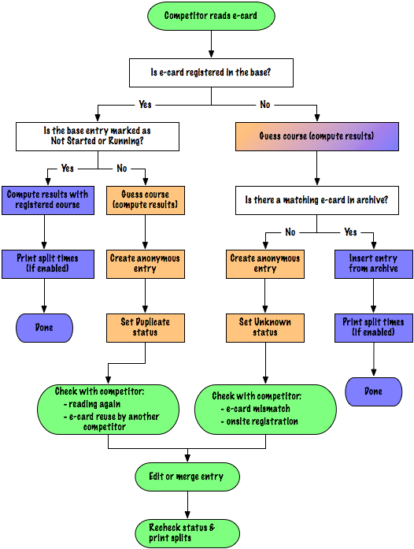

The automatic handler in Geco can handle ecard download without pre-registration. It provides on-the-fly registration with an up to date archive (if the option is active in the configuration). When reading an ecard which is not registered, Geco looks up the ecard in the archive and inserts the matching entry in the base. Geco also detects the course ran by the competitor from the ecard punches.
The schema shows in blue the two outcomes which require no operation on your part when reading ecards with auto handler:

Geco also recognizes two different outcomes which require your attention: ecard which can not be found (even in the archive) and ecard already read. For both cases, Geco creates a new entry with ecard data and detect the course, but sets unresolved status Unknown or Duplicate.
These outcomes are shown in orange in the schema:
Resolve manually these outcomes by following the green workflow in the schema. You can edit, delete, merge the new entry to resolve the case. If you choose to keep and edit the new entry, don’t forget to recheck (Mod+R) or change the official status. You can also print splits (Mod+P) for the competitor.